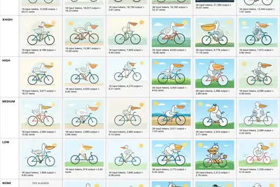
其他
其他全部主題
Article URL: https://artificialanalysis.ai/models/claude-opus-5-5 Comments URL: https://news.ycombinator.com/item?id=49804316 Points: 219 # Comments: 62
Meta has issued a patch for its Muse macOS app following the discovery of a zero-day vulnerability that could allow someone to take control of the AI agent. The bug found by security researcher Patrick Wardle utilized an undocumented Muse setting that enabled potential attackers
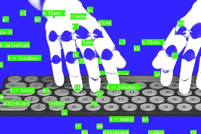
Google周一（9/21）連同5家品牌業者宣布整合Gemini Intelligence的筆電品牌Googlebook，同時也揭曉作業系統Googlebook OS。
SpaceXAI 於 9 月 21 日正式發表新一代 AI 模型「Grok 4.7」，官方將其定位為目前旗下效 […]
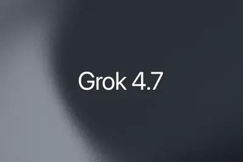
Two years after trying to sidestep mobile apps with dedicated AI hardware, Rabbit is launching OS3, a cross-platform agent that lives on the screens you already use.
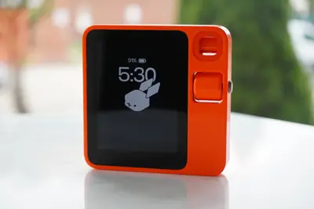
To build and deploy sophisticated robotics applications that can perceive, reason and act in dynamic environments, developers need new physical AI models and tools. The ROS open framework is a project from Open Robotics that helps humans build robots. NVIDIA Isaac ROS 5.0 — a col
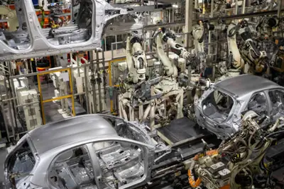
9 月 23 日，据日经新闻报道，三菱重工美国公司董事长兼 CEO Takao Tsukui 9 月 21 日在纽约接受采访时表示，受美国人工智能数据中心建设需求推动，从 2026 年 1 至 6 月的订单进度看，全球燃气轮机需求预计与 2025 年持平或更高，全年有望再次超过 100 吉瓦。他预计，这一强劲需求将延续至 2027 年。 报道称，三菱重工是全球三大发电用燃气轮机制造商之一，与 GE Vernova、西门子能源并列。其主力产品是用于燃气轮机联合循环（GTCC）电厂的高效超大型 J 型涡轮机。据三菱重工统计，2025 年全球燃气轮机需求达到
近期 PC 圈傳出 NVIDIA 傳出大幅調整 GeForce RTX 50 系列供貨，對象含 AIB 與 O […]
三星電子（Samsung Electronics）晶圓代工事業受惠於人工智慧（AI）與高效運算（HPC）需求擴張，先進製程稼動率與客戶訂單持續改善，帶動市場對單季轉虧為盈的期待...
AI因ChatGPT迎來全民普及時代，然工業AI發展相對遲緩，業界分析，現有AI架構容易出現「幻覺」是主因，這對容錯率為零的工業環境是致命傷。工業AI發展不能只靠大語言...
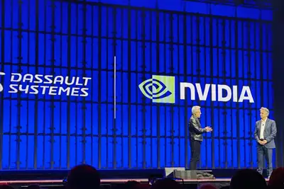
阿里巴巴旗下半導體公司平頭哥持續擴大AI基礎設施布局，產品線已從AI加速器延伸至CPU、智慧網卡及互連晶片，並往伺服器與超節點系統整合。
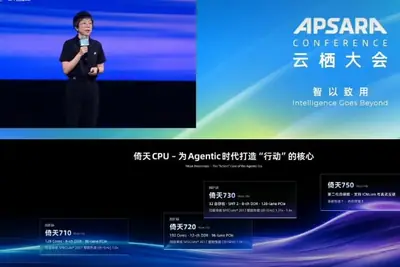
台灣總人口數不斷減少，雖然高中職、大學有志於理工的人數增加，但仍無法滿足產業需求。教育部近日邀請印度理工學院的分校校長來台，希望強化雙邊在半導體、人工智慧（A...
樂金集團（LG Group）會長具光模與微軟（Microsoft）執行長Satya Nadella近日在美國會面，宣布雙方將深化人工智慧（AI）合作，布局新一代AI資料中心、實體AI（Phy...
IT之家 9 月 23 日消息，小米新上架了三款米家灯具新品。IT之家汇总如下： 米家筒灯 3 Pro，首发价 152 元，国补价 129.2 元 米家射灯 3 Pro，首发价 176 元，国补价 149.6 元 米家筒灯 3 Pro 人在感应版，首发价 199 元，国补价 169.2 元 活动期间晒单评价满足要求可返 10 元京东红包，预约且前 3 名购买用户还可获赠筒灯 3 Pro。 米家筒灯 3 Pro 采用弧面一体设计，无缝贴合天花板，简约隐于无形；采用米家定制 全光谱灯珠 ，显色指数高达 Ra97，通过光生物安全豁免级测试，无可视频闪。 米家筒
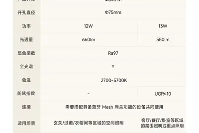
IT之家 9 月 23 日消息，夏威夷时间 9 月 22 日 9 点（北京时间 9 月 23 日 3 点）召开的 2026 骁龙峰会上，高通公司宣布推出第六代骁龙 8 超级至尊版移动平台和第六代骁龙 8 至尊版移动平台， 官方表示这是“全球最快移动 CPU”。 高通称两款产品面向“智能体人工智能”时代的移动终端需求，主要应用于下一代旗舰智能手机。 IT之家援引博文介绍，第六代骁龙 8 超级至尊版定位为其性能最强的移动平台之一，重点提升终端侧人工智能、移动游戏和影像处理能力。 其中，平台搭载的 Adreno Neural Fusion 技术可利用人工智能辅
IT之家 9 月 23 日消息，高驰昨晚宣布推出 PACE 4 Pro 运动手表， 售价 2999 元 ，部分地区国补到手价 2,549.15 元。 COROS PACE 4 Pro 采用 5 级钛金属表圈搭配蓝宝石镜面，机身重 38 克，厚度薄至 11.8mm，搭配织物表带整体重 43 克，支持 50 米防水。 这款手表配备 1.47 英寸 AMOLED 显示屏，屏幕支持 2-3500 尼特亮度范围；搭载新一代光电心率传感器，可实现全天候实时心率监测。 这款手表内置扬声器与麦克风，支持 AI 语音操控，可实现语音播报配速、心率、转弯提示；支持语音标记，
IT之家 9 月 23 日消息，京东方 A 昨日发布投资者关系活动记录表公告，京东方董事长陈炎顺表示， 公司玻璃基封装载板试验线已全线拉通 ，24 层产品已经带给客户去验证了。 京东方 SVP、传感器及解决方案业务董事长兼 CEO 徐晓光表示，目前公司已经完成 24 层、尺寸超过 100×100 毫米玻璃基封装载板产品产出，并已在厂内完成相关可靠性测试。 IT之家获悉，京东方目前正与客户进行芯片上代后的电性能测试，将载板与真实 CPU、GPU 芯片封装后放入服务器运行。 对于后续量产进展，陈炎顺表示， 量产决策条件包括客户订单量及良率保证 ，希望在 20
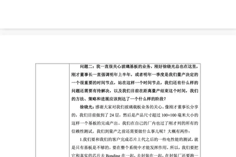
Founders shouldn't have to learn the hardest lessons the hardest way. TechCrunch Founder Summit is designed to make the challenges of starting a company easier and the highs that much greater.
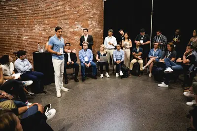
有醫師指出，人工智慧（AI）正以前所未有的步伐，在癌症照護鏈中扮演關鍵角色。從新藥研發、個人化治療，到早期篩檢 […]
北京时间 9 月 23 日，据彭博社报道，AI 先锋李飞飞呼吁由独立机构和公共部门对 AI 进行更多监督。她认为，对于能力日益强大的 AI 系统，其安全评估不应完全交由开发这些系统的公司负责。 作为斯坦福大学教授、World Labs 联合创始人，李飞飞周二表示，尽管 AI 公司的内部研究人员可以评估单个模型的能力和安全性，但这无法替代由政府、行业和学术机构共同制定的更广泛标准。 “我仍然认为，由独立机构以及学术界等公共部门制定基准非常重要。同时，行业和政府也应该共同承担责任。”李飞飞在接受彭博电视采访时表示。 随着 AI 系统的能力不断增强，人们对其潜
隨著市場對人工智慧（AI）的樂觀情緒升溫，加上原油價格重挫有助於緩解通膨疑慮，半導體與記憶體類股於週二的美國股 […]
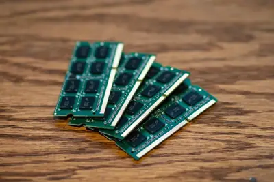
IT之家 9 月 23 日消息，彭博社的马克 · 古尔曼（Mark Gurman）昨日（9 月 22 日）发布博文，报道称苹果曾在研发一款配备摄像头的人工智能可穿戴设备，产品形态类似挂坠，可佩戴在颈部、夹在衣物上，或固定于身体其他部位。 不过，该项目目前已被推迟，苹果暂未公布后续上市计划。 IT之家附上相关截图如下： 定位方面，消息称在苹果最初的计划中，这款设备被设想为一种“始终在线”的视觉感知终端，让 AI 更贴近用户的日常环境，在免手操作的情况下提供识别、记录和辅助服务。 功能方面，该设备能够通过摄像头收集用户周围的视觉信息，并将相关数据交由苹果新一
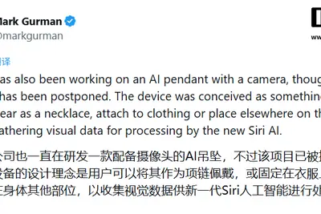
The seven-year-old startup has raised a $350 million Series E to fuel its data-as-a-service approach.
IT之家 9 月 23 日消息，在北京时间 9 月 23 日凌晨的 2026 高通骁龙峰会现场， 高通公司宣布推出第六代骁龙 8 超级至尊版移动平台和第六代骁龙 8 至尊版移动平台 ，官方表示这是“全球最快移动 CPU”。 高通公司总裁兼 CEO 安蒙（Cristiano Amon）谈到了关于 AI 时代的思考，他表示智能体时代已经到来。推理成为关键，边缘侧将发挥重要作用， 而骁龙正是面向智能体时代的处理器 。 安蒙表示：“智能体时代所承诺的， 并不是让 AI 替我们包办一切 ，而是让技术变得更加实用、更加直观，也更加契合人们的需求。” IT之家在峰会现
【科技早餐】今天精選 8 則國內外重要科技新聞。 ＊Meta Muse 超車 ChatGPT 登頂 App Store，Amazon 封鎖代理購物 Meta 於 9 月 8 日推出個人 AI 助理 Muse，可替使用者研究資料、填寫表格、預約服務及購買商品，並能連結電子郵件、行事曆、Instagram 等服務。Muse 上線後下載排名迅速超越 ChatGPT，一度登上美國 Apple App Store 免費應用程式排行榜第一名。與主要回覆問題的聊天機器人不同，Muse 的核心定位是取得使用者授權後，跨越不同網站與服務完成多步驟任務。 不過，Muse 進
The frontier AI model race has entered its comparison shopping phase.
Learn how GPT-6 improves prompt caching with higher cache hit rates, new diagnostics, explicit breakpoints, and controls that reduce latency and costs.
IT之家 9 月 23 日消息，夏威夷时间 9 月 22 日 9 点（北京时间 9 月 23 日 3 点）召开的 2026 骁龙峰会上，高通宣布携手阶跃、无量火及江波龙，基于第六代骁龙 8 超级至尊版移动平台， 端侧适配与推理优化阶跃 StepEdge-Omni 30B-MoE 模型，并现场演示相关智能体助手。 该模型拥有 300 亿参数，依托混合专家架构，仅根据任务需要激活部分专家模块，以降低计算量和内存带宽需求。 合作方通过推理引擎、异构调度及存储方案优化，让模型运行内存需求较行业常规方案降低超过 50%，并支持在智能手机上稳定运行。 高通表示，该方
Qualcomm said that its new top chip can run 30B mixture-of-expert model locally.
EvilTokens provided an end-to-end platform that makes mass compromises faster and easier.
IT之家 9 月 23 日消息，夏威夷时间 9 月 22 日 9 点（北京时间 9 月 23 日 3 点）召开的 2026 骁龙峰会上，IT之家带来前方现场报道，在活动的宣传视频中， 高通展示了阿里千问平板 Qwen Book。 根据目前曝光的细节，Qwen Book 是一款智能体原生电脑，外观方面更接近于平板，项目仍处于早期阶段，主要侧重于办公室工作，集成 Qwen3.8-Max 和 Qwen3.8-Flash。 IT之家此前报道， 这款产品确定名称为 QwenBook ，宣传语为“你的第一台‘原生智能体电脑’”，形态为平板 + 键盘触摸板的组合设计，
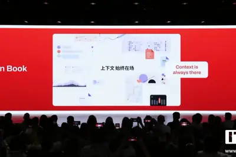
British Columbia sues OpenAI, demands Tumbler Ridge shooter’s ChatGPT logs.
IT之家 9 月 23 日消息， 美国纳斯达克综合指数（Nasdaq Composite）于美国当地时间周二（9 月 22 日）盘中再度刷新历史高位 ，其中科技股强势反弹叠加油价回落提振市场风险偏好，成为推动指数突破的关键力量。 IT之家发稿前，美国当地时间 9 月 22 日纳斯达克综合指数盘中最高触及 27,272.72 点 ，超越此前于 6 月 1 日创下的盘中纪录 27,190.21 点 。 伴随着纳斯达克综合指数上涨，道琼斯工业平均指数与标普 500 指数亦同步走高，分别上涨 0.30% 与 0.19% 。 华尔街日报认为，带动纳斯达克综合指数上
Release: llm 0.36 New OpenAI models: gpt-6-sol for GPT-6 Sol and gpt-6-luna for GPT-6 Luna . #1702 Model plugins can now declare supports_conversation = False for models that only accept single-turn prompts. LLM raises llm.ConversationNotSupported when these models receive assist
Apple may pay out up to $95 for each eligible iPhone purchased by someone who felt misled about Siri’s release. You have until December 21 to submit a claim.
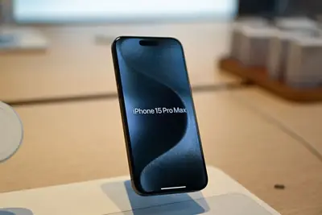
OpenAI is launching two new models, which it says are cut from the same cloth as Astra.
Article URL: https://arcturus-labs.com/blog/2026/09/21/will-openai-eat-jevs-lunch/ Comments URL: https://news.ycombinator.com/item?id=49802161 Points: 250 # Comments: 187
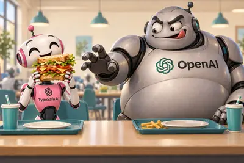
Hello Robot CEO and co-founder Aaron Edsinger will bring Stretch 4 for a live demo on the Real World AI Stage at TechCrunch Disrupt 2026. Register before September 25 to save up to $200, plus get a second pass at 50% off.
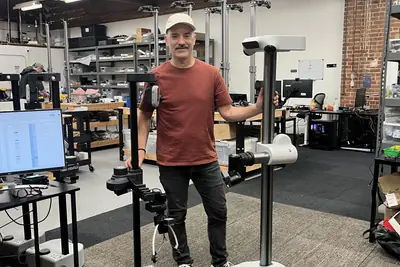
Inside two years of fraught AI data center debates in Pennsylvania.
也可參考【AI轉型實戰下篇】玉山打造全行AI代理入口，首度揭露新一代GENIE關鍵Agentic技術框架 今年9月底，玉山銀行即將推出第三代GENIE，作為內部統一AI入口，全面導入Agentic AI，要從AI輔助轉為人機協作，進一步邁向代理式銀行（Agentic Banking）願景發展。
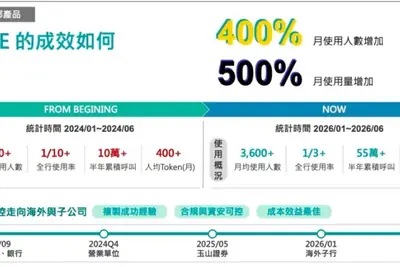